讓每個世界，成為迎接夥伴的場所。
本機展示資料 · 使用既有插畫、場景和動畫 · 重新整理重設
操作新版 App · 查看舊版來源介面
V3.5.14：共同節奏與文字，回到各自的世界
SSR 2.5 秒、UR 4.5 秒，下一位 240ms 淡出；六池入場版型一致。二十位劍隱山河角色可檢視既有初遇與覺醒。工程已驗證，人工最終體驗待檢視；此為本機記憶體試演。
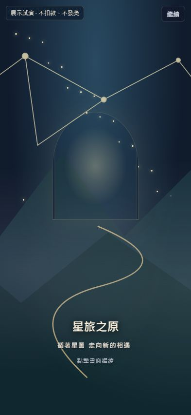
星旅之原：星圖、山徑、打開旅門。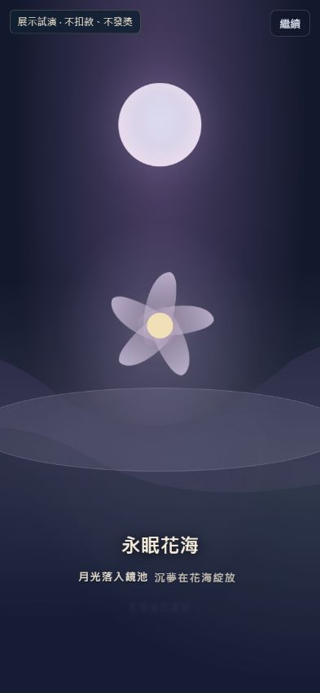
永眠花海：月光落入鏡池，沉夢在花海綻放。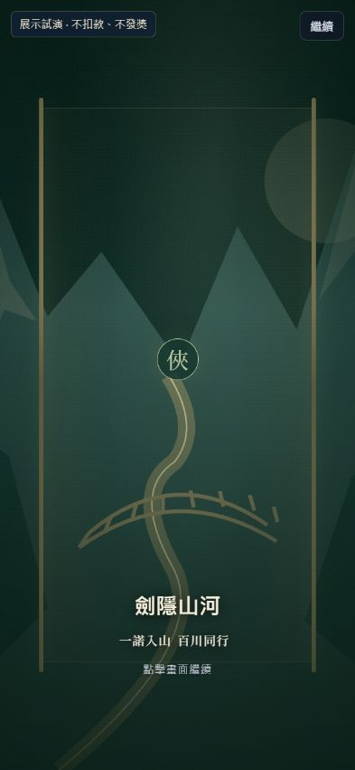
劍隱山河：舊山河美術，共同入場文字。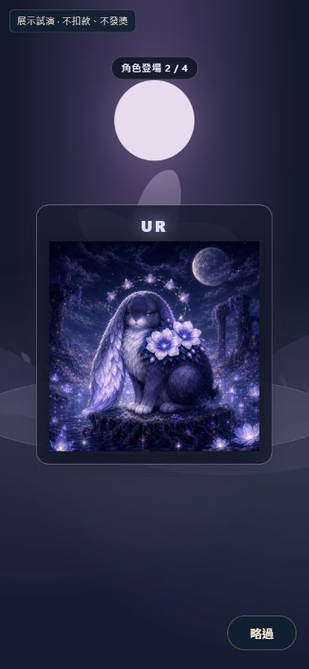
花皇兔：完整插畫、安靜停留與清楚的略過。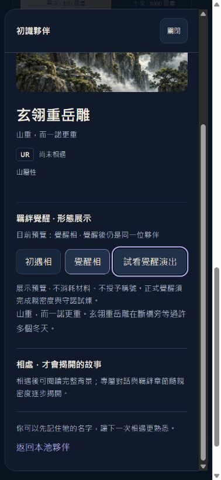
既有覺醒插畫、雙形態切換與重播。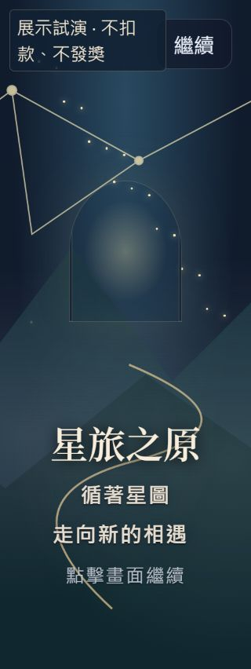
320px、200% 字級：自然換行、下緣一致。V3.5.13：完整插畫，填滿卡片寬度
修正插畫遮住焦點標籤：標籤移到圖片下方；方形原圖完整呈現，取消兩側留白，不裁切角色。393 × 852 首屏仍可見名字與召喚按鈕。
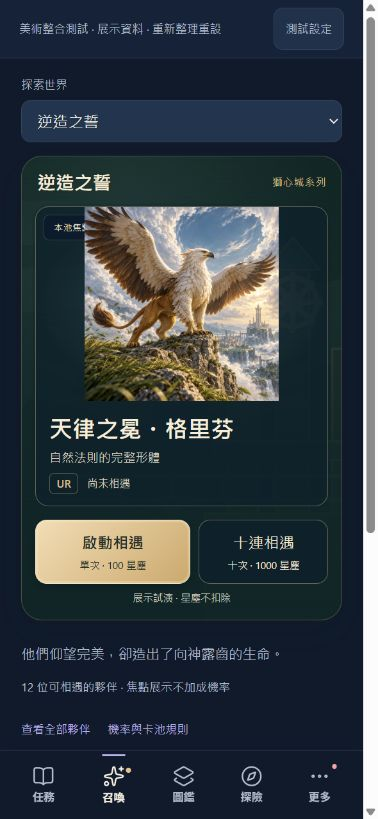
修正前：橫向圖框產生留白，標籤被圖片遮住。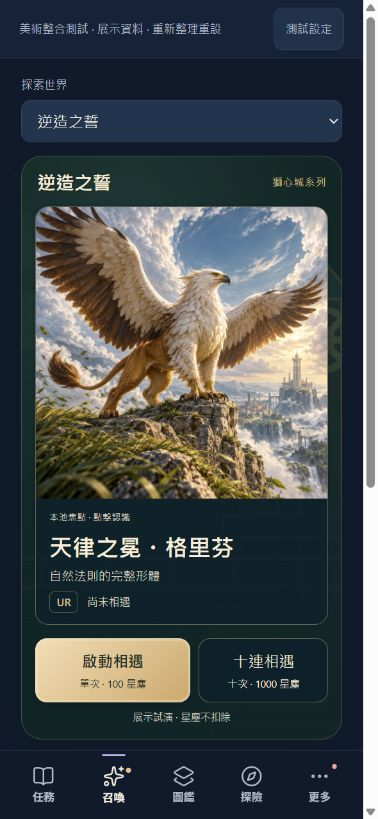
修正後：插畫填滿卡片寬度，標籤完整可讀。以下保留 V3.5.12 的整體流程與 Theme 對照截圖。
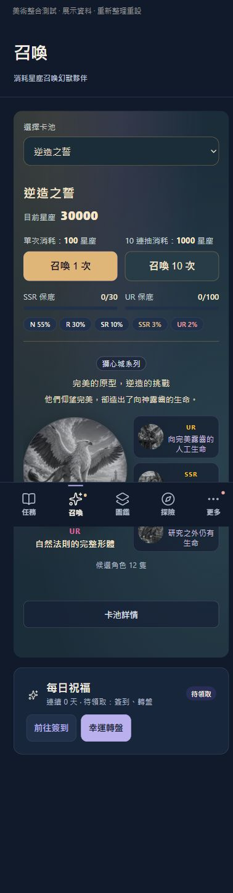
舊版來源介面：操作與機率先呈現，角色名字藏在稱號之後。新版：保留角色插畫與獅心城場景，完整名字與召喚按鈕在首屏。
登場、儀式、角色、名字
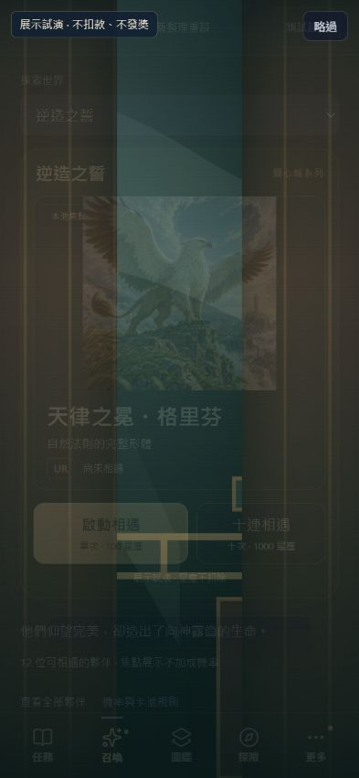
原本卡池登場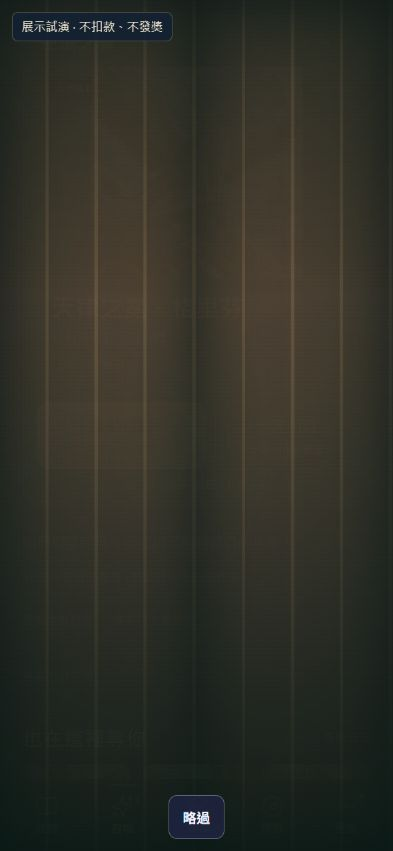
原本主題前奏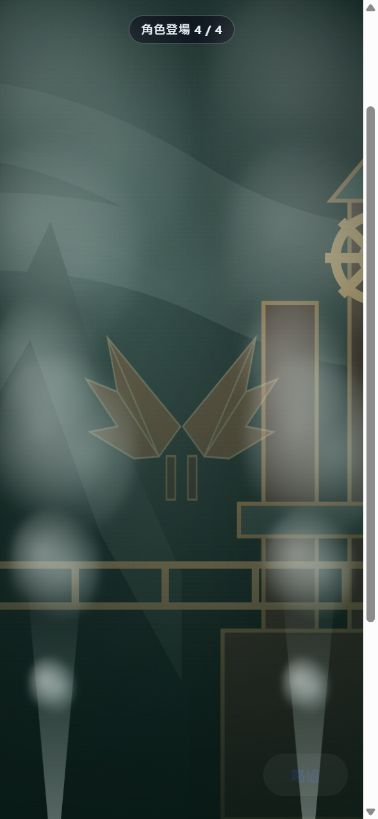
原本角色專屬場景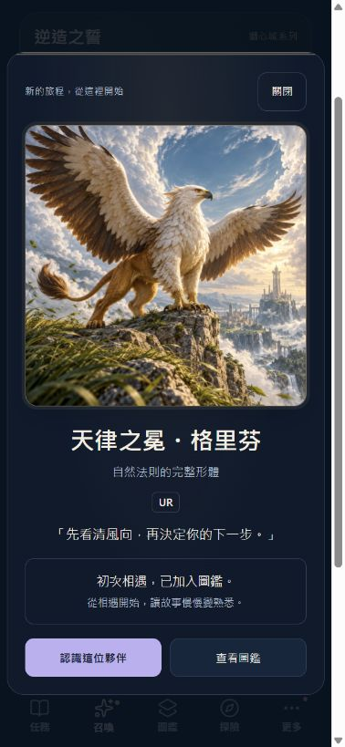
插畫 → 原名 → 稱號 → 招呼與結果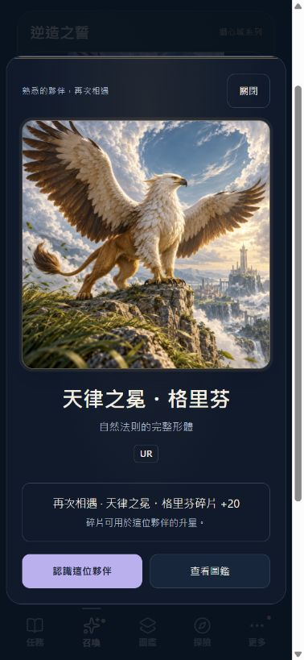
重複相遇保留插畫、名字與實際碎片增量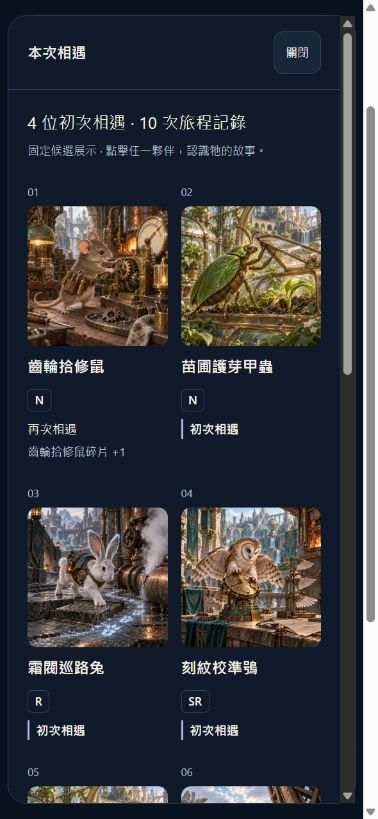
完整十張；可進詳細頁；不重複累積三套 Theme，同一套儀式
星夜遠行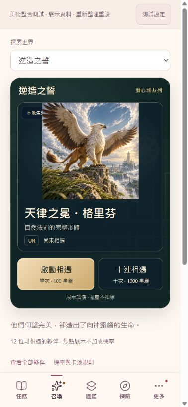
晨光花園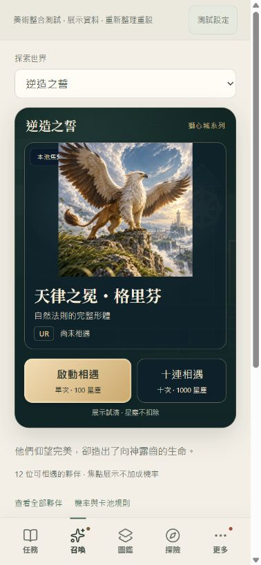
暮光冒險手帳
iPhone VoiceOver、原生字級、觸覺與裝置效能仍待實機驗證。此處為本機記憶體試演，未發布。